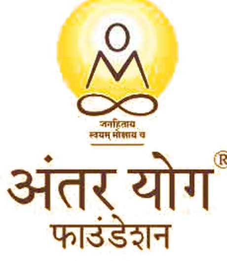
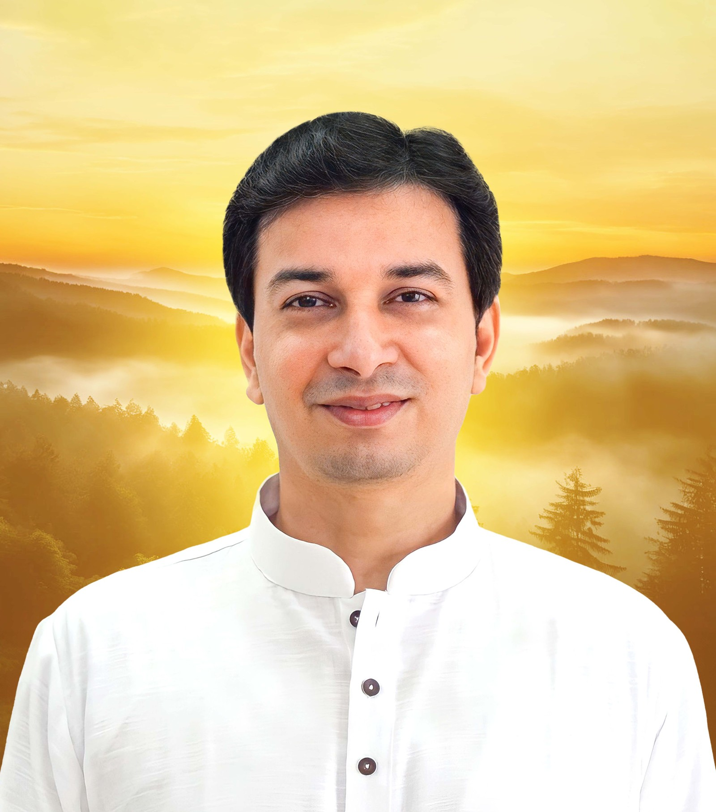
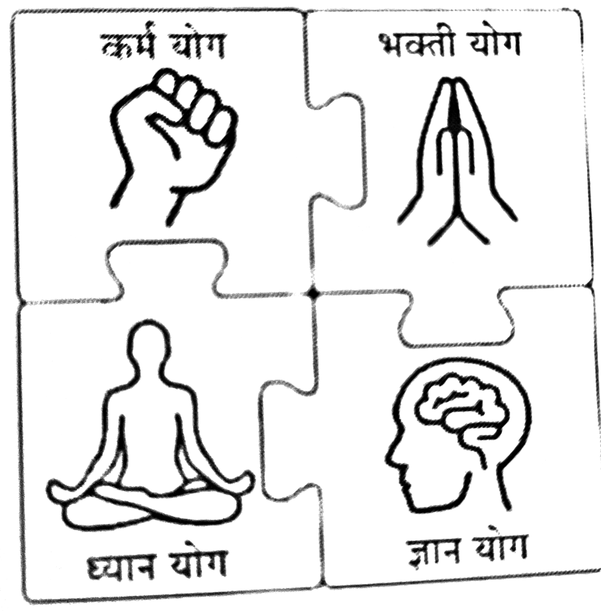

अंतर योग अश्मा गीता
(आचार्य उपेंद्र जी के प्रवचन)
सभी अधिकार अंतर योग फाउंडेशन® के स्वाधीन
मूल्य
प्रकाशक
अंतर योग फाउंडेशन®
२०१/२०२, केमको हाऊस,
डी सुखदवाला मार्ग,
फोर्ट, मुंबई – ४०० ००१.
सहायता क्रमांक : +९१ ७७१०९ ४८४६१
antaryog.foundation@gmail.com
https://learn.antaryogfoundation.in
प्रथम संस्करण : [माह वर्ष]

अंतर योग फाउंडेशन, मुंबई, एक तेज़ी से बढ़ती आध्यात्मिक संस्था, भारत को स्वस्थ, समृद्ध और आध्यात्मिक रूप से दुनिया का नेतृत्व करने में सक्षम बनाकर देश को उसके भूतपूर्व गौरव को बहाल करने के महान उद्देश्य के साथ कार्यरत है। आचार्य उपेंद्र जी एक जीवन्मुक्त आध्यात्मिक सद्गुरु और युग प्रवर्तक नायक हैं जो सन २००५ से देश में आमूलाग्र परिवर्तन लाने के लिए निस्वार्थ भाव से निरन्तर प्रयासरत हैं।
आचार्य उपेंद्र जी एक असीम ज्ञानसागर हैं जो केवल शास्त्र सिखाते ही नहीं बल्कि शास्त्रानुसार अपना जीवन जीते हैं।
आचार्य उपेंद्र जी को अभियान्त्रिकी की दो उपाधियां एवं अन्य अभियान्त्रिकी शाखाओं तथा वित्त क्षेत्र में भी प्रमाण पत्र प्राप्त हैं। आधुनिक चिकित्सा विज्ञान और आयुर्वेद शास्त्र के साथ-साथ ही आध्यात्मिक उपचार पद्धति में भी वे सर्वज्ञ हैं। आचार्य उपेंद्र जी एक दूरदर्शी विचारक, अर्थ शास्त्र तथा आधुनिक निवेश में कुशल, पारंगत ज्योतिषी तथा निष्णात रोग निवारक हैं।
वे अनेक सिद्धियों से युक्त एक ऐसे प्रबुद्ध व्यक्तित्व हैं, जो सर्वोच्च ज्ञान और आनन्द की खोज में आए हुए लाखों साधकों का प्रेरणा स्रोत बन चुके हैं।
अपने देश भारत को विश्वगुरु बनाने की एकमात्र निश्चित योजना आचार्य उपेंद्र जी के पास है। आचार्य उपेंद्र जी अपनी विद्वत्तापूर्ण, अद्वितीय एवं प्रभावशाली वाणी से अमूल्य ज्ञान प्रदान करते हैं जो आज दुनिया में और कहीं भी सिखाया नहीं जाता। यह ज्ञान हमारे देश में तेज़ी से परिवर्तन लाने में बड़ी सहायता कर रहा है।
आचार्य उपेंद्र जी ने अपने आध्यात्मिक शिविरों को सभी उम्र के और पृष्ठभूमि के लोगों के लिए सुलभ बनाया है। आचार्य उपेंद्र जी जटिल विषयों को आसान करने के लिए सरल भाषा, वैज्ञानिक प्रमाण और ऑडियो-विज़ुअल मंच, एनिमेशन, आकर्षक चित्र, रंजक लघुकथाएँ आदि आधुनिक शिक्षण विधियों का उपयोग करते हैं।
आचार्य उपेंद्र जी के अनूठे शिविरों में ४ से लेकर ९० वर्ष से भी अधिक उम्र के व्यापक आयु वर्ग के साधक एक साथ सर्वोच्च आध्यात्मिक ज्ञान सीखते हैं। अंतर योग एकमात्र ऐसा संगठन है जो आध्यात्मिक ज्ञान को सभी के लिए सुलभ बनाने के लिए यथाशक्ति दक्षिणा (अपनी वास्तविक आय क्षमता के अनुसार दक्षिणा अर्पण करना) के सिद्धान्त पर अधिकांश शिविर आयोजित करता है।
चाहे वह अर्थ शास्त्र, ज्योतिष शास्त्र, नीति शास्त्र हो या राम गीता, गुरु गीता, उपनिषदों जैसे ग्रन्थ हो, एक नौसिखिया साधक भी उसे आसानी से समझ सकता है इतनी सरल भाषा में आचार्य उपेंद्र जी पढ़ाते हैं।
भगवान श्रीकृष्ण ने भगवद् गीता अध्याय ७ श्लोक २ और अध्याय ९ श्लोक १ में कहा हैं कि आध्यात्मिक ज्ञान को विज्ञान और तर्क के आधार पर सिखाया जाना चाहिए। आज आमतौर पर देखा जाता है कि हमारे धर्मग्रन्थों को इस तरह नहीं पढ़ाया जाता। आज एक ओर अज्ञान एवं अन्धविश्वास के जाल में फँसे भक्त हैं तो दूसरी ओर ऐसे लोग हैं जो पूर्णतः विज्ञानवादी अथवा नास्तिक हैं। आचार्य उपेंद्र जी ने इस बात को पहचाना और हमारे ऋषियों की तरह शास्त्र पढ़ाना प्रारम्भ किया। यह सर्वविदित सत्य है कि हमारे पूज्य ऋषि-मुनि भी महान वैज्ञानिक थे जो तत्वज्ञान को व्यावहारिक तथा वैज्ञानिक दृष्टिकोण से भी पढ़ाते थे।
आचार्य उपेंद्र जी बड़ी कुशलता से विज्ञान और अध्यात्म के बीच सन्तुलन निभाते हैं। आचार्य उपेंद्र जी सभी प्राचीन ग्रन्थों के सांकेतिक भाषा में लिखे हुए शाश्वत ज्ञान को उजागर करके सिखाते हैं जिसके कारण विज्ञानवादि लोगों में श्रद्धा निर्माण होती है। साथ ही आचार्य उपेंद्र जी धार्मिक लोगों को अपने ग्रन्थों में छिपा विज्ञान समझाते हैं और उन्हें अन्ध भक्त बनने से रोकते हैं। 'ज्ञानी भक्त बनो' यह जो भगवद् गीता में पुनः पुनः कहा है वही आचार्य उपेंद्र जी का भी उपदेश है। इसलिए सभी धर्मों के साधक अंतर योग फाउंडेशन से आसानी से जुड़ रहे हैं क्योंकि उन्हें वैज्ञानिक सन्दर्भ और तर्क के आधार पर अपने सवालों का पूरा समाधान मिलता है।
अंतर योग में साधकों के तुरन्त परिवर्तन से आश्चर्यचकित देश के कई संन्यासी और गुरु भी आचार्य उपेंद्र जी से इस तुरन्त परिवर्तन का रहस्य पूछते हैं। उन्होंने स्वयं आचार्य उपेंद्र जी की दिव्य शक्तियों का अनुभव किया है और ऐसी घटनाओं को खुद देखा है। उन्होंने आचार्य उपेंद्र जी से उच्चतम आध्यात्मिक ज्ञान सीखने में भी रुचि दिखाई है।
समय के साथ लुप्त हुए गणेश विद्या, श्री विद्या, दुर्गा सप्तशती, पितृऋण मुक्ति, रोग निवारण तन्त्र जैसी अनेक विद्याओं को आचार्य उपेंद्र जी ने पुनर्जीवित किया है।
आज जनमानस में भगवद् गीता ही प्रसिद्ध है। परन्तु सनातन धर्म शास्त्रों में चालीस से भी अधिक अमूल्य गीताएँ हैं जो विभिन्न विषयों पर आधारित है तथा परम कल्याण का उपदेश देती है। केवल अंतर योग में ही इन सभी गीताओं को आसान शब्दों में, आधुनिक शिक्षण विधियों का उपयोग करके और वर्तमान उदाहरणों के साथ पढ़ाया जाता है। आचार्य उपेंद्र जी द्वारा लिए जाने वाले इन गीता सत्रों में दिए गए सर्वोच्च ज्ञान के कारण, लाखों साधकों के जीवन में उपस्थित जटिल समस्याएँ आसानी से हल हो रही हैं। अश्मा गीता भी इन्हीं गीताओं में से एक है।
साधकों के मन में आध्यात्मिकता के बीज को बोते हुए उन्हें असीम प्रेरणा देने वाली 'गुरुमाँ' अर्थात नीता ताई, अंतर योग की सहसंस्थापिका, आचार्य उपेंद्र जी की पत्नी एवं आध्यात्मिक सहचारिणी हैं। उनके द्वारा निर्देशित सभी स्त्रियाँ, बच्चे एवं युवा आध्यात्मिकता से परिपूर्ण जीवन जीते हुए अपने राष्ट्र की प्रगति में योगदान देने के लिए प्रेरित हो रहे हैं। उनके मार्गदर्शन में साधक लौकिक एवं आध्यात्मिक दृष्टि से समृद्ध जीवन जी रहे हैं।
नीता ताई वेदान्त का ज्ञान सिखाकर महिलाओं को सक्षम, सबल और सशक्त बना रही हैं। अंतर योग फाउंडेशन से जुड़ी दुनिया भर की हज़ारों महिलाओं के लिए उनका जीवन एक आदर्श बन रहा है। उनके द्वारा लिए जाने वाले सरस्वती दीक्षा जैसे अनोखे शिविर के ज़रिए बालकों में कला, क्रीड़ा, कुशलता, सृजनात्मकता जैसी प्रतिभाओं को जागृत कर, आध्यात्मिक ज्ञान के माध्यम से उनमें विवेक बुद्धि, आज्ञाकारिता एवं राष्ट्रभक्ति जागृत हो रही हैं। आयुर्वेद और योग शास्त्र में निपुण नीता ताई की अनूठी उपचार क्षमता द्वारा कई साधकों को स्वास्थ्य लाभ होकर उन्हें नया जीवन मिला हैं। साधकों के शारीरिक, मानसिक और आध्यात्मिक स्वास्थ्य के लिए उनके द्वारा नियमित योगासन, प्राणायाम और साधना सत्र आयोजित किए जाते हैं। कोरोना महामारी के समय से, वे नियमित रूप से विश्व शान्ति प्रार्थना और ध्यान सत्र आयोजित कर रही हैं, जिसका अंतर योग साधकों के साथ ही, हमारे देश और सम्पूर्ण विश्व को लाभ हुआ है। वे कार्यक्रम की रूपरेखा तैयार करने से लेकर उसके सफल समारोह तक अंतर योग फाउंडेशन की विभिन्न गतिविधियों जैसे महादान, विभिन्न शिविर, यात्रा, सामूहिक साधना सत्र, महायज्ञ, महाभिषेक आदि में प्रमुख भूमिका निभाती हैं। यह उनके पग पग पर मिलने वाले अमूल्य मार्गदर्शन का ही परिणाम है कि अंतर योग फाउंडेशन का कार्य सभी बाधाओं को लांघकर तेज़ी से जारी है।
नीता ताई ने आचार्य उपेंद्र जी के दिव्य सान्निध्य में विभिन्न दुर्लभ और शक्तिशाली साधनाएँ की हैं जो केवल पूर्ण रूप से समर्पित और शरणागत शिष्य को ही दी जाती हैं। अंतर योग अभियान के विकास में वे एक अहम भूमिका निभा रही हैं।
रूपा ताई अंतर योग फाउंडेशन की सहसंस्थापिका और व्यवस्थापिका होने के साथ ही आचार्य जी की एक आदर्श शरणागत शिष्या तथा नीता ताई की बड़ी बहन हैं। वेदान्त की शिक्षा द्वारा स्त्री सशक्तिकरण जैसा महानतम कार्य रूपा ताई और नीता ताई द्वारा उत्तम प्रकार से किया जा रहा है। रूपा ताई की कार्य-शक्ति और कार्य-कुशलता अद्वितीय है। उनके बड़े से बड़े कार्यों तथा सामान्य कार्यों से झलकने वाली उनकी समर्पण की सर्वोच्च भावना सभी के लिए एक आदर्श है। उनकी विशेष बात यह है कि आचार्य जी से सीखे हुए तत्त्व और प्राप्त किया हुआ ज्ञान वे सही तरीके से और शीघ्र ही अपने आचरण में लाती हैं। यह उनके अनन्य भक्ति के कारण ही सम्भव है।
अंतर योग गुरुकुल निर्माण के असाधारण कार्य का श्रेय उन्हीं को जाता है। यह पवित्र वास्तु आज देश के अभूतपूर्व परिवर्तन का केन्द्र बन गई है। यहाँ आने वाली हर व्यक्ति इस वास्तु की दिव्यता का अनुभव करती है और यहाँ की उच्च तरंगें साधकों के आभामण्डल के दोषों को दूर कर रही हैं। भविष्य में भी रूपा ताई के नेतृत्व में अंतर योग की कई पवित्र वास्तुओं का निर्माण किया जाने का योग है। वे अंतर योग यात्रा विभाग की प्रमुख हैं। अतः वे अंतर योग की आध्यात्मिक यात्राओं की उत्कृष्ट योजना एवं प्रबन्धन का कार्य सम्भालती हैं। वे अंतर योग महादान, निर्जनवास, खेल दिवस, सामूहिक साधना सत्र जैसी विभिन्न परियोजनाओं के आयोजन में केन्द्रीय भूमिका निभाती हैं। सारा कार्य बड़ा ज़िम्मेदारी का होने पर भी उनके चेहरे पर कभी कोई तनाव नहीं दिखता और वह हमेशा प्रसन्नचित्त होकर कार्य करती हैं।
रूपा ताई की अनन्य भक्ति और पूर्व पुण्य के परिणाम स्वरूप, उन्हें प्रत्यक्ष आचार्य जी के दैवीय सान्निध्य और मार्गदर्शन में एक वर्ष से अधिक समय तक अत्यन्त दुर्लभ साधना और कठोर तपस्या करने का अवसर मिला है।
गुरुमाँ नीता ताई तथा रूपा ताई इन दोनों के कार्य के पीछे आध्यात्मिक ज्ञान की मज़बूत नींव, गुरु के प्रति अपार आस्था और भक्ति, कई जन्मों की तपस्या और अन्य कई सूक्ष्म चीज़ें हैं। अतः इसमें कोई सन्देह नहीं कि भविष्य में उनके द्वारा और भी भव्य एवं महान कार्य किए जाएंगे।
अंतर योग फाउंडेशन तेज़ी से विकसित होने वाला एक ऐसा अभियान है, जो
के महान सिद्धान्त पर कार्य करते हुए हमें जनमानस की अधिक से अधिक सेवा करने के लिए प्रेरित करता है।
अंतर योग की जीवन शैली को अपनाकर असंख्य साधकों ने अपने जीवन की स्वास्थ्य, धन तथा रिश्तों सम्बन्धी समस्याओं का पूर्ण समाधान प्राप्त करके, स्थायी रूप से परिवर्तन अनुभव किया है।

एक ऐसा दुर्लभ आध्यात्मिक संगठन, जहाँ आप योग की चारों शाखाओं कर्म, भक्ति, ज्ञान एवं ध्यान का सम्पूर्ण ज्ञान प्राप्त करते हैं।